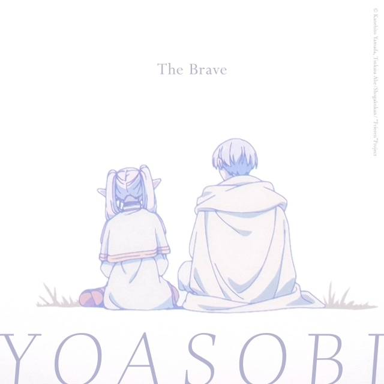

The BRAVE lyric
The BRAVE lyric (English ver.)
By Yoasobi
back to home
original video

Many days tinted in fairy tale scenes
Have arrived at the end, proof we have seen
I cut out and choose from a trip so long
A little passage I review
Tale of what's taken place right on this field
Shadows of manifested pain and woe
There was a hero who took out all foes
A little journey memory with you
No more pages left in that story
Our hero goes into slumber, deep
Leaving behind a veil of peace for all
Saving the dwellers of this land
The flow of time erases without mercy
And erodes all memories and hues
Even the traces left in life are now rusting as time ensues
And yet, I keep all your hopes
All the words and wishes, courage you owned
Still dwell inside me, and even now in my heart
Keep living through
Odyssey we shared, on the same path and nothing more to that
So it should have been, but suddenly I was wondering
All those tears rolling down my cheeks, why do they come out and fall?
I wanna find out and still even right now
If I engage in the journey we went about again
Though I am no longer walking next to you
One day, I know I'll find the truth
And we begin, right to the story
Out to meet people in this journey
So hurry up, our chase will go on forever
Ever, ever, ask for how long
And now that story unfolds into
A journey that, alone, I set out to
I meet the locals of every town I stop in
They all are recalling the person that you were
Unwavering kindness is spoken of you
Acting all cool in everything you'd do
Here and there, we can find scattered symbols around
Manifesting battle we won for peace
And even that was left for me so one day
I wouldn't find myself alone, becoming lonely
And I call to mind every moment of our journey
When I see the signs left in these scenes
Ah, ah, ayy, ya
Ah, ah, ooh, ah
Ah, ah, ayy, ya, ayy, ayy, ya
Many days tinted in fairy tale scenes
Have arrived at the end, proof we have seen
It was that moment, our fateful meeting
One percent of the journey, spent with me
Even if your courage is swept away to the distance
And the wind has taken what everybody can recall
I will bring you on with me into the future's light
I've taken your hand in mine
I know it all began right at that time
Mundane everyday signs
The moments ignited in laughter with you remain
My reflections of those times go on as brightly shining scenes
I wanna find out, and still even right now
Looking back, it's you, standing and so proud
Evermore gently smiling right at me, without a sound
I'm perceiving you around
And we begin, right to the story
Out to meet people in this journey
So hurry up, our chase will go on forever
Ever, ever, ask for how long
Now a new beginning has begun to be and
In this land that you protected and kept in safety
These budding lives are with me on this journey